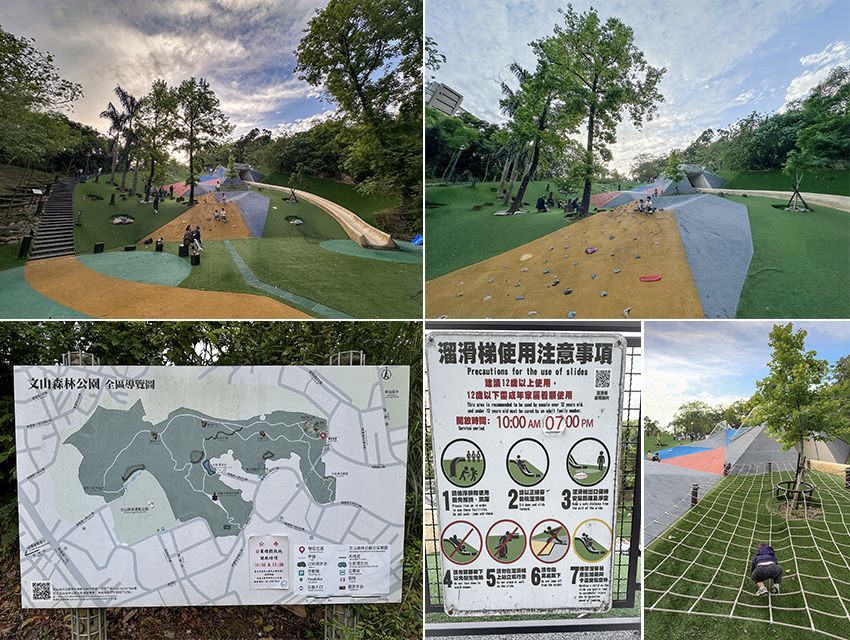
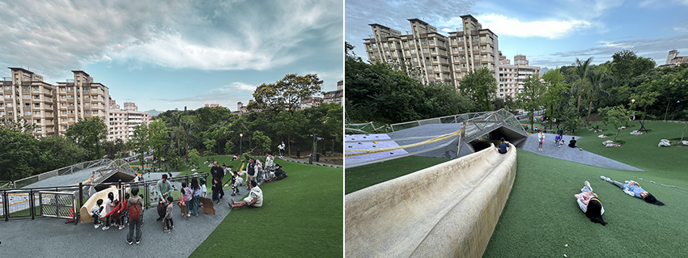

現在全台各地都有許多特色公園，讓孩子們能盡情放電。其中我們發現一個離家不遠的好地方—文山森林公園，這裡不但可以攀岩，還有超長滑梯，簡直是孩子的天堂。
文山森林公園位於文山區福興路95巷，唯一的小缺點是附近停車不易。若搭乘大眾運輸前往，從捷運萬隆站步行就能抵達，交通其實也算便利。但這完全不減我們對這裡的喜愛，因為這座公園的遊樂設施真的非常精彩！
|  |
這次我們主要都在園區內超受歡迎的「趣探險之丘」遊玩，遊戲區每天開放時間為早上十點至晚上七點。裡面有長達50公尺的超長溜滑梯，小朋友光是來回滑幾趟就超級放電，沿途都能聽到孩子開心的笑聲，連大人都玩得超開心（笑）。溜滑梯建議12歲以上使用，12歲以下需成人陪同看顧使用，由於溜滑梯太熱門了，大家排隊都會排到斜坡上，有帶小小孩的家長務必注意安全；園區很貼心地鋪設人工草皮的坡地，我們看到很多人都直接滑草，不需特別裝備就能玩得盡興；還有攀岩牆可以讓孩子挑戰自己、練習肢體協調。天氣晴朗時，常常可以看到有人鋪著野餐墊悠閒地聊天、吃點心，氣氛非常放鬆。
|  |
除了刺激的探險之丘，園區內還有一條綠意盎然的步道，適合親子一同散步、觀察自然。沿途可以看到不少樹種和昆蟲，對於喜歡觀察自然的小朋友來說，是個認識生態的好機會。而對爸媽來說，也能在這片森林般的空間中暫時遠離城市喧囂，享受難得的清新空氣與寧靜時光。
我們特別喜歡這裡的設計，因為它不只是「給孩子玩的地方」，更是一個全家大小都能一起放鬆、互動的空間，建議大家如果想來文山森林公園玩，可以避開中午最熱的時段，天氣舒服時會更適合活動。如果擔心人多，平日前往就能玩好玩滿，不僅孩子能玩得更自在，爸媽也比較輕鬆。另外，記得帶些水、點心和野餐墊，簡單準備一下，就能開啟一場輕鬆又充實的親子小旅行。
整體來說，文山森林公園是一個兼具探險、放電、自然觀察與親子互動的好地方，特別推薦給住在台北或週末想來場小旅行的家庭。只要來過一次，相信你們也會愛上這座藏身城市角落的森林樂園唷！